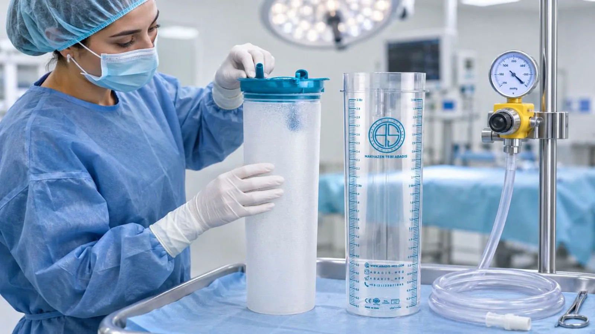
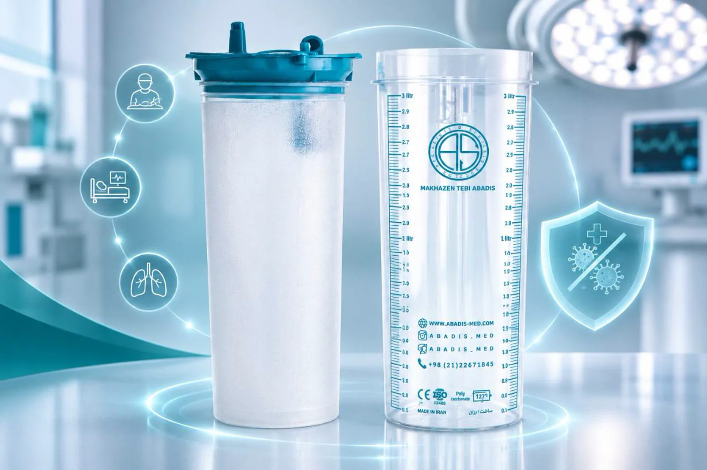

مقدمه
ساکشن جراحی یکی از اجزای ضروری اتاقهای عمل مدرن، بخشهای مراقبت ویژه، اورژانس و سایر محیطهای درمانی است. این سیستم با جمعآوری خون، مایعات شستوشو، ترشحات و سایر مواد از میدان جراحی، به حفظ دید مناسب جراح و انجام مؤثر اقدامات درمانی کمک میکند.
با وجود استفاده گسترده از تجهیزات ساکشن، عملکرد این سیستمها ممکن است با خطراتی مانند تماس با مایعات آلوده، اختلال در عملکرد تجهیزات، مواجهه شغلی کارکنان درمان و دفع نامناسب پسماندهای پزشکی همراه باشد.
مدیریت مؤثر این مخاطرات نیازمند استفاده از تجهیزات پزشکی مناسب، تدوین روشهای اجرایی مشخص، رعایت اصول پیشگیری و کنترل عفونت و اجرای فرایندهای ایمن مدیریت پسماند است.
سازمان جهانی بهداشت (World Health Organization – WHO) دستورالعملهای معتبری در زمینه پیشگیری و کنترل عفونت، ایمنی جراحی، بازفرآوری تجهیزات پزشکی و مدیریت پسماندهای مراکز درمانی منتشر کرده است. این منابع، اصول مهمی را ارائه میکنند که میتوان آنها را در مدیریت ایمنی سیستمهای ساکشن جراحی به کار گرفت.
با این حال، باید میان توصیههای عمومی WHO در حوزه کنترل عفونت و الزامات فنی استانداردهای تجهیزات پزشکی تفاوت قائل شد.
سازمان جهانی بهداشت یک دستورالعمل جامع و واحد که تمام جنبههای فنی و بالینی تجهیزات ساکشن جراحی را پوشش دهد، منتشر نکرده است. در مقابل، روشهای ایمن استفاده از این تجهیزات بر اساس مجموعهای از اسناد WHO، استانداردهای مرتبط ISO، دستورالعملهای تولیدکنندگان و پروتکلهای درمانی مراکز پزشکی تعیین میشوند.
در این مقاله، منابع علمی مرتبط و نقش آنها در ارتقای ایمنی ساکشن جراحی بررسی میشود. تمرکز اصلی بر کیسههای ساکشن یکبارمصرف، مخازن ساکشن، لولههای انتقال، فیلترهای محافظ و مدیریت ایمن مایعات و ترشحات آلوده است.
ساکشن جراحی چیست؟
ساکشن جراحی به فرایند استفاده کنترلشده از فشار منفی برای خارج کردن مایعات و برخی مواد از یک ناحیه مشخص درمانی گفته میشود.
در طول عمل جراحی، ممکن است خون، محلولهای شستوشو و ترشحات در میدان جراحی تجمع پیدا کنند. تجهیزات ساکشن به کادر درمان کمک میکنند تا این مواد را بر اساس نیاز بالینی از محل موردنظر خارج کنند.
یک سیستم ساکشن جراحی معمولاً از اجزای زیر تشکیل میشود:
- منبع خلأ یا پمپ ساکشن
- تنظیمکننده فشار منفی یا رگولاتور
- لولههای ساکشن
- سرساکشن یا تجهیزات تماس با بیمار
- مخزن جمعآوری مایعات
- کیسه ساکشن یکبارمصرف، در صورت استفاده
- فیلترهای محافظ یا تجهیزات جلوگیری از سرریز
ساختار دقیق این سیستم به نوع کاربرد درمانی و طراحی تولیدکننده بستگی دارد.
ساکشن جراحی ممکن است از طریق سیستم خلأ مرکزی بیمارستان یا دستگاه ساکشن برقی قابلحمل تأمین شود.
میزان فشار منفی موردنیاز نیز با توجه به نوع عمل جراحی، وضعیت بیمار و ویژگیهای تجهیزات متفاوت است.
بنابراین نمیتوان یک مقدار مشخص فشار منفی را برای تمام کاربردهای جراحی مناسب دانست.
پارامترهای ساکشن باید توسط افراد آموزشدیده و متناسب با نوع اقدام درمانی و دستورالعمل دستگاه تنظیم شوند.
چرا کنترل عفونت در ساکشن جراحی اهمیت دارد؟
سیستمهای ساکشن جراحی ممکن است خون، مایعات بدن و موادی را جمعآوری کنند که حاوی عوامل بیماریزای بالقوه هستند.
مدیریت نامناسب این تجهیزات میتواند کارکنان درمانی را در معرض تماس با مایعات آلوده قرار دهد و احتمال آلودگی محیط درمان را افزایش دهد.
مهمترین مسیرهای مواجهه با آلودگی عبارتاند از:
- نشت مایع از مخازن جمعآوری
- جدا شدن ناخواسته لولههای ساکشن
- پاشش مایعات هنگام تخلیه یا دفع
- تماس با سطوح آلوده تجهیزات
- شستوشو و ضدعفونی نامناسب تجهیزات چندبارمصرف
- استفاده یا دفع نادرست تجهیزات یکبارمصرف
راهنمای جهانی سازمان جهانی بهداشت با عنوان Global Guidelines for the Prevention of Surgical Site Infection بر اهمیت اجرای هماهنگ اقدامات کنترل عفونت در مراحل پیش از عمل، حین عمل و پس از عمل جراحی تأکید دارد [۱].
اگرچه این دستورالعمل طراحی مشخصی برای مخازن ساکشن تعیین نمیکند، اصول کلی آن بر استفاده صحیح از تجهیزات و پیشگیری از آلودگی محیط جراحی تأکید دارد.
بر این اساس، ساکشن جراحی باید بخشی از نظام جامع پیشگیری و کنترل عفونت اتاق عمل در نظر گرفته شود، نه صرفاً یک فعالیت مستقل مرتبط با جمعآوری مایعات.
دستورالعملهای سازمان جهانی بهداشت مرتبط با ساکشن جراحی
چندین سند منتشرشده توسط WHO مبنای علمی مناسبی برای تدوین روشهای اجرایی مدیریت تجهیزات ساکشن در بیمارستانها فراهم میکنند.
۱. راهنمای جهانی پیشگیری از عفونت محل جراحی
سازمان جهانی بهداشت در سال ۲۰۱۸ ویرایش دوم راهنمای جهانی پیشگیری از عفونت محل جراحی را منتشر کرد.
این راهنما شامل ۲۹ توصیه در ۲۳ موضوع مرتبط با پیشگیری از عفونت محل جراحی است [۱].
توصیههای این سند موضوعاتی مانند آمادهسازی دست جراحان، پیشگیری آنتیبیوتیکی، آمادهسازی پوست و سایر اقدامات مرتبط با دوره پیش، حین و پس از جراحی را پوشش میدهند.
ارتباط این راهنما با تجهیزات ساکشن جراحی عمدتاً غیرمستقیم است.
تجهیزات ساکشن باید بهگونهای در فرایندهای اتاق عمل مورد استفاده قرار گیرند که اصول آسپتیک حفظ شود و از آلودگی غیرضروری محیط جراحی جلوگیری گردد.
همچنین نباید ویژگی خاص یک کیسه یا مخزن ساکشن را مستقیماً به WHO نسبت داد، مگر اینکه در سند مربوط بهصورت مشخص مطرح شده باشد.
۲. راهنمای برنامههای پیشگیری و کنترل عفونت
سند Guidelines on Core Components of Infection Prevention and Control Programmes چارچوبی برای تقویت برنامههای پیشگیری و کنترل عفونت در سطح ملی و مراکز درمانی ارائه میکند [۲].
این چارچوب بر وجود برنامههای سازمانی کنترل عفونت، دستورالعملهای مبتنی بر شواهد، آموزش کارکنان، نظام پایش و فراهم کردن محیط درمانی مناسب تأکید دارد.
در حوزه ساکشن جراحی، این اصول از تدوین روشهای اجرایی مستند برای آمادهسازی تجهیزات، استفاده، مدیریت پسماند و اقدامات پس از جراحی پشتیبانی میکنند.
۳. راهنمای بازفرآوری تجهیزات پزشکی
سازمان جهانی بهداشت در سند Decontamination and Reprocessing of Medical Devices for Health-care Facilities اصول شستوشو، ضدعفونی، استریلیزاسیون و الزامات کنترل کیفیت مربوط را تشریح کرده است [۳].
این راهنما برای تجهیزات ساکشن چندبارمصرف اهمیت دارد.
الزامات بازفرآوری باید متناسب با کاربرد محصول، خطر آلودگی، طراحی تجهیز و دستورالعمل سازنده تعیین شوند.
نکته مهم آن است که تجهیزات چندبارمصرف و قطعات یکبارمصرف نباید از نظر الزامات استفاده و بازفرآوری یکسان در نظر گرفته شوند.
۴. راهنمای مدیریت پسماندهای مراکز درمانی
کتاب راهنمای Safe Management of Wastes from Health-care Activities اصول شناسایی، تفکیک، جمعآوری، پردازش و دفع پسماندهای پزشکی را توضیح میدهد [۴].
در این منبع به پسماندهای آلوده اتاق عمل، از جمله مخازن ساکشن و مایعات بدن، اشاره شده است.
از این رو، این سند یکی از منابع مهم برای مدیریت پسماند سیستمهای ساکشن جراحی محسوب میشود.
روش مناسب دفع باید با توجه به ماهیت مواد جمعآوریشده، زیرساختهای مدیریت پسماند و مقررات محلی تعیین شود.
اجزای سیستم ساکشن جراحی و ملاحظات ایمنی آنها
هر یک از اجزای سیستم ساکشن دارای الزامات عملکردی و ایمنی خاصی هستند.

مخازن ساکشن (Suction Canisters)
مخازن ساکشن برای جمعآوری مایعات خارجشده در طول اقدامات درمانی طراحی میشوند.
این مخازن ممکن است چندبارمصرف باشند یا همراه با کیسههای جمعآوری یکبارمصرف مورد استفاده قرار گیرند.
از مهمترین ملاحظات طراحی این تجهیزات میتوان به یکپارچگی بدنه، سازگاری اتصالات، پایداری مخزن، امکان مشاهده مایعات جمعآوریشده و مقاومت متناسب با شرایط عملکرد اشاره کرد.
درجهبندی روی بدنه مخزن میتواند برای برآورد حجم مایعات جمعآوریشده مفید باشد.
با این حال، این درجهبندیها نباید بدون تأیید دقت اندازهگیری، جایگزین تجهیزات اندازهگیری کالیبره در کاربردهای نیازمند دقت بالا شوند.
کیسههای ساکشن یکبارمصرف (Disposable Suction Liner Bags)
کیسههای ساکشن یکبارمصرف برای جمعآوری مایعات در سیستمهای دارای مخزن سازگار طراحی میشوند.
بسته به ساختار محصول، این کیسهها میتوانند مسیر مشخصی برای جمعآوری و نگهداری مایعات فراهم کنند.
در صورت طراحی و استفاده صحیح، بعضی سیستمهای دارای کیسه یکبارمصرف ممکن است نیاز به برخی مراحل تخلیه دستی مرتبط با مخازن چندبارمصرف را کاهش دهند.
با این وجود، ادعاهای مربوط به کاهش آلودگی، کاهش مواجهه شغلی یا کاهش نیاز به شستوشو باید بر اساس عملکرد واقعی و دادههای معتبر همان محصول ارزیابی شوند.
لولههای ساکشن (Suction Tubing)
لولههای ساکشن مسیر انتقال مایعات و سایر مواد مجاز را از سرساکشن به سمت سیستم جمعآوری فراهم میکنند.
این لولهها باید با اتصالات و شرایط فشار منفی سیستم سازگار باشند.
پیچخوردگی، انسداد، آسیب فیزیکی و اتصالات نامناسب میتوانند عملکرد ساکشن را مختل کنند.
فیلترهای هیدروفوبیک و محافظ
برخی سیستمهای ساکشن از فیلترهای هیدروفوبیک یا سایر اجزای محافظ استفاده میکنند.
بسته به طراحی و عملکرد اعتبارسنجیشده، این تجهیزات میتوانند به جلوگیری از عبور مایع به بخشهای مشخصی از سیستم کمک کنند.
با این حال، عملکرد فیلتر بهعنوان مانع عبور مایع با عملکرد فیلتراسیون میکروبی یکسان نیست.
بنابراین نباید یک فیلتر هیدروفوبیک را بدون وجود شواهد آزمون معتبر، دارای خاصیت ضدباکتریایی یا قابلیت جلوگیری از انتقال میکروارگانیسمها معرفی کرد.
اصول استفاده ایمن از ساکشن جراحی بر اساس راهنماهای WHO
دستورالعملهای WHO در زمینه کنترل عفونت و تجهیزات پزشکی، مبنای یک رویکرد نظاممند برای مدیریت ایمنی تجهیزات فراهم میکنند.
اقدامات زیر، کاربردهای عملی اصول عمومی WHO، استانداردهای فنی مرتبط و روشهای پذیرفتهشده مدیریت تجهیزات هستند.
پیش از شروع عمل جراحی
پیش از استفاده، کارکنان درمانی باید اطمینان حاصل کنند که تجهیزات ساکشن برای اقدام درمانی موردنظر مناسب هستند.
بررسیهای اولیه شامل اطمینان از عملکرد منبع خلأ، سازگاری قطعات، نصب صحیح سیستم جمعآوری و اتصال ایمن اجزا است.
مخزن یا کیسه ساکشن باید از نظر آسیب ظاهری و سایر نواقص احتمالی بررسی شود.
در مواردی که استفاده از سرساکشن یا لوله استریل ضروری است، سلامت بستهبندی و اطلاعات برچسب محصول نیز باید کنترل شود.
تمام مجموعه ساکشن باید مطابق دستورالعمل تولیدکننده آماده شود.
چکلیست ایمنی جراحی WHO شامل بررسی مشکلات احتمالی تجهیزات و تأیید شرایط استریل است [۵].
اگرچه این چکلیست ترتیب مشخص و یکسانی برای بررسی تجهیزات ساکشن تعیین نکرده، بیمارستانها میتوانند کنترل آمادهبهکاری ساکشن را در روش اجرایی داخلی خود بگنجانند.
حین عمل جراحی
در طول جراحی، سیستم ساکشن باید توسط کارکنان آموزشدیده مورد استفاده قرار گیرد.
میزان فشار منفی باید با هدف بالینی و ویژگیهای دستگاه متناسب باشد.
کادر درمان باید سیستم را از نظر نشتی، جدا شدن اتصالات، انسداد یا نشانههای عملکرد نامناسب پایش کنند.
همچنین میزان پرشدگی مخزن باید مطابق دستورالعمل تجهیزات تحت نظر باشد.
دستکاری غیرضروری مسیرهای حاوی مایعات آلوده باید به حداقل برسد.
در صورت آسیبدیدگی، آلودگی یا نامناسب شدن یک جزء برای ادامه استفاده، اقدام لازم باید بر اساس پروتکل درمانی انجام شود.
پس از پایان عمل جراحی
در پایان عمل، سیستم ساکشن باید مطابق طراحی محصول و روشهای کنترل عفونت بیمارستان مدیریت شود.
قطعات یکبارمصرف باید متناسب با کاربرد تعریفشده و طبقهبندی پسماند دفع شوند.
تجهیزات چندبارمصرف نیز باید فرایندهای لازم شستوشو، ضدعفونی یا استریلیزاسیون را طی کنند.
WHO تأکید میکند که آلودگیزدایی تجهیزات پزشکی فرایندی چندمرحلهای است و اعتبارسنجی و کنترل کیفیت در اثربخشی بازفرآوری اهمیت اساسی دارند [۳].
مدیریت ایمن پسماندهای حاصل از ساکشن جراحی
جمعآوری و دفع مایعات جراحی یکی از مهمترین بخشهای عملیاتی مدیریت سیستمهای ساکشن است.
مخازن ساکشن ممکن است حاوی خون، محلولهای شستوشو، ترشحات بدن و سایر مواد باشند.
بعضی از این مواد به دلیل خطرات عفونی، شیمیایی، دارویی یا سایر مخاطرات نیازمند مدیریت ویژه هستند.
راهنمای مدیریت پسماند WHO مخازن ساکشن و مایعات بدن را از جمله پسماندهای تولیدشده در اتاق عمل معرفی میکند [۴].
طبقهبندی پسماند
مایعات جمعآوریشده باید بر اساس خطرات واقعی خود طبقهبندی شوند.
تمام مایعات حاصل از اقدامات جراحی الزامات دفع یکسانی ندارند.
برای مثال، مواد حاوی ترکیبات دارویی یا شیمیایی خطرناک ممکن است به روش مدیریت متفاوتی نسبت به مایعات فاقد این مخاطرات نیاز داشته باشند.
بیمارستانها باید مقررات ملی و روشهای اجرایی محلی مدیریت پسماند را رعایت کنند.
کاهش مواجهه شغلی کارکنان
کارکنانی که با پسماندهای ساکشن سروکار دارند باید متناسب با خطر مواجهه، از وسایل حفاظت فردی مناسب استفاده کنند.
روشهای مدیریت پسماند باید احتمال پاشش، نشتی و بازکردن غیرضروری محفظههای آلوده را کاهش دهند.
مخازن و کیسههای جمعآوری نباید بیش از حد تعیینشده توسط تولیدکننده پر شوند.
همچنین انتقال غیرضروری مایعات آلوده از یک محفظه به محفظه دیگر باید تا حد امکان حذف شود.
این اقدامات، اصول مدیریت ریسک هستند و بهتنهایی اثبات نمیکنند که یک سیستم مشخص قادر به حذف کامل خطر عفونت است.
دفع پسماندهای مایع
راهنمای مدیریت پسماند WHO روشهای دفع مایعات را با توجه به زیرساخت فاضلاب و ویژگیهای پسماند بررسی میکند.
در این راهنما، برخی روشهای تخلیه به شبکه فاضلاب تحت شرایط محدود و با رعایت اقدامات محافظتی و جلوگیری از پاشش مطرح شدهاند.
با این حال، این موضوع به معنای توصیه عمومی WHO برای تخلیه تمام پسماندهای ساکشن جراحی در فاضلاب بیمارستان نیست.
روش مناسب باید با توجه به مقررات محلی، ظرفیت تصفیه فاضلاب و خطرات احتمالی عفونی، دارویی یا شیمیایی تعیین شود.
مقایسه سیستمهای ساکشن چندبارمصرف و یکبارمصرف
بیمارستانها ممکن است از مخازن جمعآوری چندبارمصرف، سیستمهای دارای کیسه یکبارمصرف یا ترکیبی از هر دو استفاده کنند.
هر روش دارای ملاحظات عملیاتی متفاوتی است.
| معیار ارزیابی | سیستم جمعآوری چندبارمصرف | سیستم دارای کیسه یکبارمصرف |
|---|---|---|
| جمعآوری مایعات | مخزن قابل استفاده مجدد | کیسه یکبارمصرف در سیستم سازگار |
| اقدامات پس از مصرف | ممکن است نیازمند شستوشو و ضدعفونی اعتبارسنجیشده باشد | کیسه مصرفشده باید به روش مناسب دفع شود |
| تولید پسماند | وابسته به مواد شستوشو و قطعات تعویضی | تولید پسماند ناشی از کیسه یکبارمصرف |
| مواجهه شغلی | وابسته به روش تخلیه و بازفرآوری | وابسته به طراحی کیسه و روش جابهجایی |
| مصرف منابع | ممکن است شامل آب و مواد شوینده باشد | شامل مواد مصرفی و مدیریت پسماند |
| الزامات کیفیت | اعتبارسنجی بازفرآوری و سلامت تجهیز | یکپارچگی محصول، سازگاری و دفع مناسب |
هیچیک از این دو روش را نمیتوان در تمام شرایط بهصورت قطعی برتر دانست.
ارزیابی جامع باید ایمنی بیمار، مواجهه شغلی، الزامات کنترل عفونت، مصرف منابع، هزینههای عملیاتی و آثار زیستمحیطی را در نظر بگیرد.
استانداردهای بینالمللی مرتبط با تجهیزات ساکشن پزشکی
اسناد سازمان جهانی بهداشت راهنماهای مهمی در زمینه سلامت عمومی و مراقبت بالینی ارائه میکنند؛ در حالی که استانداردهای بینالمللی، الزامات فنی ایمنی و عملکرد تجهیزات پزشکی را تعیین میکنند.
برای تجهیزات ساکشن، مجموعه استانداردهای ISO 10079 اهمیت ویژهای دارد.
استاندارد ISO 10079-1:2022
این استاندارد الزامات ایمنی و عملکرد تجهیزات ساکشن پزشکی و جراحی با منبع تغذیه الکتریکی را مشخص میکند [۶].
دامنه کاربرد آن تجهیزات مورد استفاده در مراکز درمانی و برخی محیطهای پزشکی دیگر را شامل میشود.
اصلاحیهای نیز در سال ۲۰۲۶ برای این استاندارد منتشر شده است.
قابلیت اعمال استاندارد باید بر اساس کاربرد موردنظر و ساختار تجهیز بررسی شود.
استاندارد ISO 10079-3:2022
این استاندارد به تجهیزات ساکشنی میپردازد که از منبع خلأ یا گاز با فشار مثبت تغذیه میشوند [۷].
این استاندارد برای برخی سیستمهای متصل به زیرساخت گازهای طبی و تجهیزات مرتبط با ساکشن کاربرد دارد.
استاندارد ISO 10079-4:2021
این استاندارد الزامات عمومی تجهیزات ساکشن پزشکی را تعیین میکند.
الزامات مجموعه ISO 10079 باید بر اساس دامنه کاربرد هر بخش و نوع محصول اعمال شوند.
بنابراین نمیتوان فرض کرد که تمام کیسههای ساکشن یا تجهیزات جانبی بهطور مستقل مشمول تمامی بخشهای این مجموعه استاندارد هستند.
استاندارد ISO 13485:2016
استاندارد ISO 13485 الزامات سیستم مدیریت کیفیت سازمانهای فعال در صنعت تجهیزات پزشکی را مشخص میکند.
این استاندارد از فرایندهایی مانند کنترل خرید، مدیریت تولید، ردیابی محصول، رسیدگی به شکایات و اجرای اقدامات اصلاحی پشتیبانی میکند.
با این حال، داشتن گواهینامه ISO 13485 بهتنهایی عملکرد تمام محصولات تولیدشده توسط یک شرکت را تأیید نمیکند.
استاندارد ISO 14971:2019
استاندارد ISO 14971 چارچوب مدیریت ریسک تجهیزات پزشکی را تعریف میکند.
در سیستمهای ساکشن جراحی، مخاطرات مرتبط ممکن است شامل نشت مایع، جدا شدن اتصالات، اعمال فشار منفی نامناسب، اختلال عملکرد فیلتر و استفاده نادرست باشند.
کنترلهای لازم باید بر اساس محصول مشخص و کاربرد موردنظر تعیین شوند.
نقش فیلترهای هیدروفوبیک در ایمنی ساکشن جراحی
فیلترهای هیدروفوبیک در برخی کاربردهای ساکشن پزشکی مورد استفاده قرار میگیرند که در آنها کنترل عبور مایع اهمیت دارد.
عملکرد این فیلترها به ویژگیهای مواد سازنده و نحوه تعامل آنها با مایعات در شرایط تعریفشده وابسته است.
با این حال، کارایی فیلتر تحت تأثیر عواملی مانند ساختار منافذ، اختلاف فشار، ویژگیهای مایع و آرایش سیستم قرار دارد.
برای ارزیابی کیفیت و خرید این محصولات، مراکز درمانی باید به مستندات عملکردی توجه کنند و صرفاً به عنوان «هیدروفوبیک» اکتفا نکنند.
برخی پرسشهای فنی مهم عبارتاند از:
- آیا فیلتر آزمونهای معتبر مرتبط با فشار عبور مایع را گذرانده است؟
- آیا با سیستم ساکشن موردنظر سازگار است؟
- آیا ادعاهای عملکرد میکروبی آن با آزمونهای معتبر تأیید شدهاند؟
نصب و تعویض فیلترها نیز باید مطابق دستورالعمل تولیدکننده انجام شود.
خطرات رایج مرتبط با ایمنی ساکشن جراحی
چندین خطر مهم باید هنگام انتخاب تجهیزات و استفاده بالینی مورد توجه قرار گیرند.
نشت مایعات: آسیبدیدگی مخزن، اتصالات شل یا تجهیزات جانبی ناسازگار ممکن است باعث خروج مایعات جمعآوریشده شوند.
سرریز مایعات: پرشدگی بیشازحد مخزن ممکن است عملکرد سیستم را مختل کند یا خطرات جابهجایی را افزایش دهد.
انسداد لولهها: پیچخوردگی، تجمع لخته یا مواد دیگر میتواند عملکرد ساکشن را کاهش دهد.
فشار منفی نامناسب: تنظیم فشار نامتناسب با اقدام درمانی ممکن است خطرات بالینی ایجاد کند یا عملکرد سیستم را مختل نماید.
آلودگی متقاطع: استفاده نادرست از تجهیزات یا بازفرآوری نامناسب میتواند زمینه انتقال آلودگی را فراهم کند.
دفع نامناسب پسماند: طبقهبندی یا مدیریت نادرست پسماندهای ساکشن ممکن است کارکنان و مسئولان دفع پسماند را در معرض مواد خطرناک قرار دهد.
مدیریت این خطرات باید شامل کنترلهای فنی و آموزش کارکنان باشد.
بیمارستانها چگونه میتوانند ایمنی ساکشن جراحی را ارتقا دهند؟
مدیریت مؤثر تجهیزات تنها به خرید محصولات مناسب محدود نمیشود.
بیمارستانها باید روشهای اجرایی مستندی برای آمادهسازی، استفاده، بازرسی، مدیریت پسماند و نظافت تجهیزات تدوین کنند.
۱. انتخاب استاندارد تجهیزات
بیمارستانها باید مشخصات فنی موردنیاز برای دستگاههای ساکشن و تجهیزات جانبی را تعیین کنند.
معیارهای انتخاب میتوانند شامل سازگاری قطعات، کیفیت مواد اولیه، یکپارچگی سیستم، ظرفیت جمعآوری و مدارک نظارتی باشند.
۲. آموزش کارکنان
کارکنان اتاق عمل باید درباره آمادهسازی تجهیزات، جابهجایی ایمن، عیبیابی و دفع پسماند آموزش ببینند.
در صورت تغییر طراحی تجهیزات یا اصلاح روشهای اجرایی، آموزش باید بهروزرسانی شود.
۳. یکپارچهسازی با برنامه کنترل عفونت
روشهای استفاده از ساکشن جراحی باید با برنامه پیشگیری و کنترل عفونت بیمارستان هماهنگ باشند.
واحدهای مرتبط ممکن است شامل مدیریت اتاق عمل، کنترل عفونت، مهندسی پزشکی، بهداشت محیط و تأمین تجهیزات باشند.
۴. پایش عملکرد
بیمارستانها باید مشکلات تجهیزات و رویدادهای گزارششده را پایش کنند.
نمونههایی از این موارد عبارتاند از نشت مایع، خرابی اتصالات، دفع نامناسب و مواجهه شغلی قابل پیشگیری.
۵. اقدامات اصلاحی و پیشگیرانه
مشکلات شناساییشده باید بررسی شوند تا علل اصلی آنها مشخص شود.
اقدامات اصلاحی ممکن است شامل تعویض محصول، اصلاح روش اجرایی، آموزش تکمیلی یا ارزیابی تأمینکننده باشند.
چکلیست کاربردی ایمنی ساکشن جراحی
جدول زیر یک نمونه پیشنهادی برای استفاده و بومیسازی در بیمارستانهاست و چکلیست رسمی WHO برای ساکشن جراحی محسوب نمیشود.
| مرحله | اقدام کنترلی پیشنهادی |
|---|---|
| پیش از استفاده | تأیید مناسب بودن تجهیزات برای اقدام درمانی |
| پیش از استفاده | بررسی مخزن، کیسه، لولهها و اتصالات |
| پیش از استفاده | اطمینان از نصب صحیح اجزای محافظ |
| پیش از استفاده | بررسی عملکرد منبع خلأ |
| حین استفاده | پایش عملکرد ساکشن و سلامت لولهها |
| حین استفاده | کنترل میزان پرشدگی مخزن |
| حین استفاده | جلوگیری از دستکاری غیرضروری قطعات آلوده |
| پس از استفاده | تفکیک و مدیریت صحیح قطعات یکبارمصرف |
| پس از استفاده | بازفرآوری تجهیزات چندبارمصرف طبق روشهای اعتبارسنجیشده |
| پس از استفاده | نظافت و ضدعفونی سطوح مرتبط تجهیزات |
| بازنگری کیفیت | ثبت رویدادهای مهم و اقدامات اصلاحی |
هر مرکز درمانی باید این چکلیست را بر اساس تجهیزات موجود، روشهای اجرایی و الزامات قانونی خود تنظیم کند.
ساکشن جراحی و پایداری محیطزیست
مراکز درمانی بیش از گذشته به دنبال ارتقای کنترل عفونت و کاهش آثار غیرضروری زیستمحیطی هستند.
سیستمهای ساکشن جراحی ممکن است بر مصرف آب، مواد شوینده و ضدعفونیکننده، تولید پسماند و روشهای جابهجایی مواد تأثیر بگذارند.
برای مثال، برخی سیستمهای دارای کیسه یکبارمصرف ممکن است نیاز به شستوشوی مخازن چندبارمصرف پس از هر اقدام درمانی را کاهش دهند.
با این حال، این سیستمها پسماند یکبارمصرف نیز تولید میکنند.
بنابراین عملکرد کلی زیستمحیطی را نمیتوان تنها بر اساس یک ویژگی محصول تعیین کرد.
ارزیابی مقایسهای باید تولید، حملونقل، استفاده بالینی، الزامات نظافت و مدیریت پایان عمر محصول را در نظر بگیرد.
روش ارزیابی چرخه عمر (Life Cycle Assessment – LCA) میتواند برای بررسی این عوامل مورد استفاده قرار گیرد.
ادعاهای زیستمحیطی نیز باید بر اساس روش محاسبه شفاف و دادههای معتبر مربوط به همان محصول ارائه شوند.
نقش شرکت مخازن طبی آبادیس در مدیریت مایعات جراحی
شرکت دانشبنیان مخازن طبی آبادیس (ABADIS MED) یکی از تولیدکنندگان تجهیزات پزشکی با تمرکز بر راهکارهای مدیریت مایعات و ترشحات پزشکی است.
سبد محصولات این شرکت شامل کیسههای ساکشن یکبارمصرف، مخازن ساکشن، لولههای ساکشن و فیلترهای تخصصی میشود.
این محصولات در سیستمهای ساکشن سازگار مورد استفاده در محیطهای درمانی کاربرد دارند.
در محیط جراحی، استفاده از تجهیزات جمعآوری مناسب میتواند به مدیریت منظم مایعات و ترشحات کمک کند.
ویژگیهایی مانند یکپارچگی مخزن، سازگاری اتصالات و روش صحیح استفاده، از ملاحظات مهم در انتخاب تجهیزات توسط مراکز درمانی هستند.
شرکت آبادیس در چارچوب سیستم مدیریت کیفیت تجهیزات پزشکی فعالیت دارد و دارای گواهینامه ISO 13485:2016 است.
با این حال، انطباق هر محصول با استاندارد اختصاصی، عملکرد فیلتراسیون یا ادعاهای مربوط به کاهش عفونت باید بهصورت مستقل و بر اساس مدارک فنی مربوط بررسی شود.
تمرکز آبادیس بر مدیریت مایعات پزشکی باعث شده موضوعاتی مانند ایمنی ساکشن جراحی، پیشگیری از عفونت و مدیریت پسماندهای درمانی از مباحث مهم آموزشی برای مشتریان و همکاران حوزه سلامت این شرکت باشند.
سؤالات متداول درباره دستورالعملهای WHO برای ساکشن جراحی
آیا سازمان جهانی بهداشت دستورالعمل اختصاصی برای ساکشن جراحی دارد؟
WHO از طریق اسنادی درباره پیشگیری از عفونت محل جراحی، کنترل عفونت، بازفرآوری تجهیزات پزشکی و مدیریت پسماند، توصیههای مرتبط با ساکشن جراحی ارائه میکند.
این اسناد نباید با یک استاندارد فنی جامع و اختصاصی WHO برای تمام اجزای ساکشن جراحی اشتباه گرفته شوند.
مهمترین خطر کنترل عفونت در ساکشن جراحی چیست؟
خطرات احتمالی شامل تماس با مایعات آلوده، نشتی، جابهجایی نامناسب و بازفرآوری ناکافی تجهیزات چندبارمصرف هستند.
اهمیت هر خطر به نوع تجهیز و شرایط بالینی بستگی دارد.
آیا کیسههای ساکشن یکبارمصرف از مخازن چندبارمصرف ایمنتر هستند؟
نه لزوماً در تمام شرایط.
ایمنی به طراحی محصول، روش استفاده، سازگاری قطعات، کیفیت بازفرآوری و عملکرد اعتبارسنجیشده بستگی دارد.
فیلتر هیدروفوبیک در سیستم ساکشن چه کاربردی دارد؟
در طراحیهای مناسب، فیلتر هیدروفوبیک میتواند به جلوگیری از عبور مایع به بخشهای تعیینشده سیستم ساکشن کمک کند.
تواناییهای حفاظتی دقیق آن باید از طریق آزمونهای مربوط به همان محصول تأیید شوند.
آیا پسماند مایع ساکشن را میتوان در فاضلاب تخلیه کرد؟
این روش در تمام شرایط مجاز نیست.
الزامات دفع به ویژگیهای پسماند، مقررات مربوط و زیرساخت تصفیه فاضلاب بستگی دارند.
WHO شرایط خاصی را بررسی میکند، اما مجوز عمومی برای تخلیه نامحدود تمام پسماندهای ساکشن در فاضلاب ارائه نمیدهد.
چه استانداردهایی برای تجهیزات ساکشن پزشکی کاربرد دارند؟
مجموعه ISO 10079 شامل استانداردهای مرتبط با تجهیزات ساکشن پزشکی است.
همچنین ISO 13485 و ISO 14971 چارچوبهای مدیریت کیفیت و مدیریت ریسک را ارائه میکنند.
کاربرد هر استاندارد به نوع محصول و هدف استفاده بستگی دارد.
مخازن ساکشن چگونه باید شستوشو و ضدعفونی شوند؟
مخازن چندبارمصرف باید مطابق دستورالعمل اعتبارسنجیشده تولیدکننده و روش اجرایی مرکز درمانی شستوشو، ضدعفونی یا بازفرآوری شوند.
کیسههای یکبارمصرف نیز نباید برخلاف برچسب محصول مجدداً استفاده شوند.
نتیجهگیری
ساکشن جراحی با امکان خارج کردن و جمعآوری مایعات از نواحی مشخص درمانی، نقش مهمی در اقدامات پزشکی مدرن ایفا میکند.
با این حال، مدیریت ایمن این سیستم نیازمند تجهیزات مناسب، اجرای مؤثر اصول پیشگیری و کنترل عفونت، کارکنان آموزشدیده و روشهای صحیح مدیریت پسماند است.
انتشارات سازمان جهانی بهداشت چارچوب علمی ارزشمندی برای پیشگیری از عفونت، ایمنی جراحی، بازفرآوری تجهیزات پزشکی و مدیریت پسماندهای درمانی فراهم میکنند.
این توصیهها باید همراه با استانداردهای فنی قابل اعمال، دستورالعمل تولیدکننده و روشهای اجرایی مرکز درمانی تفسیر و اجرا شوند.
برای بیمارستانها، انتخاب تجهیزات ساکشن سازگار، پیشگیری از نشتی و مواجهه شغلی قابل اجتناب، مدیریت صحیح اقدامات پس از جراحی و پایش عملکرد تجهیزات از اولویتهای مهم محسوب میشوند.
تولیدکنندگان تجهیزات پزشکی نیز با ارائه محصولات دارای طراحی مناسب و اطلاعات فنی قابل اتکا، میتوانند در ارتقای ایمنی این فرایند مشارکت کنند.
در نهایت، ایمنی ساکشن جراحی تنها به یک ویژگی مشخص محصول وابسته نیست؛ بلکه حاصل عملکرد هماهنگ طراحی تجهیزات، اقدامات بالینی، کنترل عفونت و مدیریت صحیح پسماند است.
منابع علمی و تخصصی
[۱] سازمان جهانی بهداشت (WHO). راهنمای جهانی پیشگیری از عفونت محل جراحی، ویرایش دوم، ۲۰۱۸.
Global Guidelines for the Prevention of Surgical Site Infection.
https://www.who.int/publications/i/item/9789241550475
[۲] سازمان جهانی بهداشت (WHO). راهنمای اجزای اصلی برنامههای پیشگیری و کنترل عفونت در سطح ملی و مراکز مراقبت حاد، ۲۰۱۶.
Guidelines on Core Components of Infection Prevention and Control Programmes at the National and Acute Health Care Facility Level.
https://www.who.int/publications/i/item/9789241549929
[۳] سازمان جهانی بهداشت (WHO). آلودگیزدایی و بازفرآوری تجهیزات پزشکی در مراکز درمانی، ۲۰۱۶.
Decontamination and Reprocessing of Medical Devices for Health-care Facilities.
https://www.who.int/westernpacific/publications/i/item/9789241549851
[۴] سازمان جهانی بهداشت (WHO). مدیریت ایمن پسماندهای حاصل از فعالیتهای مراقبت سلامت، ویرایش دوم، ۲۰۱۴.
Safe Management of Wastes from Health-care Activities.
https://www.who.int/publications/i/item/9789241548564
[۵] سازمان جهانی بهداشت (WHO). چکلیست ایمنی جراحی، ۲۰۰۹.
WHO Surgical Safety Checklist.
https://www.who.int/docs/default-source/patient-safety/9789241598590-eng-checklist.pdf
[۶] سازمان بینالمللی استانداردسازی (ISO). استاندارد ISO 10079-1:2022؛ تجهیزات ساکشن پزشکی با منبع تغذیه الکتریکی، همراه با اصلاحیه ۲۰۲۶.
https://www.iso.org/standard/81532.html
[۷] سازمان بینالمللی استانداردسازی (ISO). استاندارد ISO 10079-3:2022؛ تجهیزات ساکشن پزشکی با منبع خلأ یا فشار مثبت گاز.
https://www.iso.org/standard/81534.html
[۸] سازمان جهانی بهداشت (WHO). راهنمای خلاصه آلودگیزدایی و بازفرآوری تجهیزات پزشکی در مراکز درمانی، ۲۰۲۲.
Decontamination and Reprocessing of Medical Devices for Health-care Facilities: Aide-Memoire.
https://www.who.int/southeastasia/publications/i/item/WHO-UHL-IHS-IPC-2022.4
[۹] مراکز کنترل و پیشگیری از بیماریها (CDC). روشهای نظافت محیط در اتاقهای عمل.
Environmental Cleaning Procedures: Operating Rooms.
https://www.cdc.gov/healthcare-associated-infections/hcp/cleaning-global/procedures.html
[۱۰] سازمان جهانی بهداشت (WHO). پیشگیری از عفونت محل جراحی؛ رویکردهای اجرایی برای توصیههای مبتنی بر شواهد، ۲۰۱۸.
Preventing Surgical Site Infections: Implementation Approaches for Evidence-Based Recommendations.